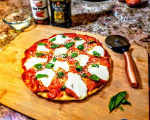

pizza.html
Home

this is a photo of pizza that lools extremely delicious fresh and newly cooked
the secret of this pizza lays in the red sauce, cheese paparoni,and the freshbread
Ingredients
- red sauce
- barmizan cheese
- fresh parparoni
Steps
- put red sauce
- add a hand full of cheese
- put it in the oven for 7-8min
- add the parparoni
- then put it again in the oven for 2min